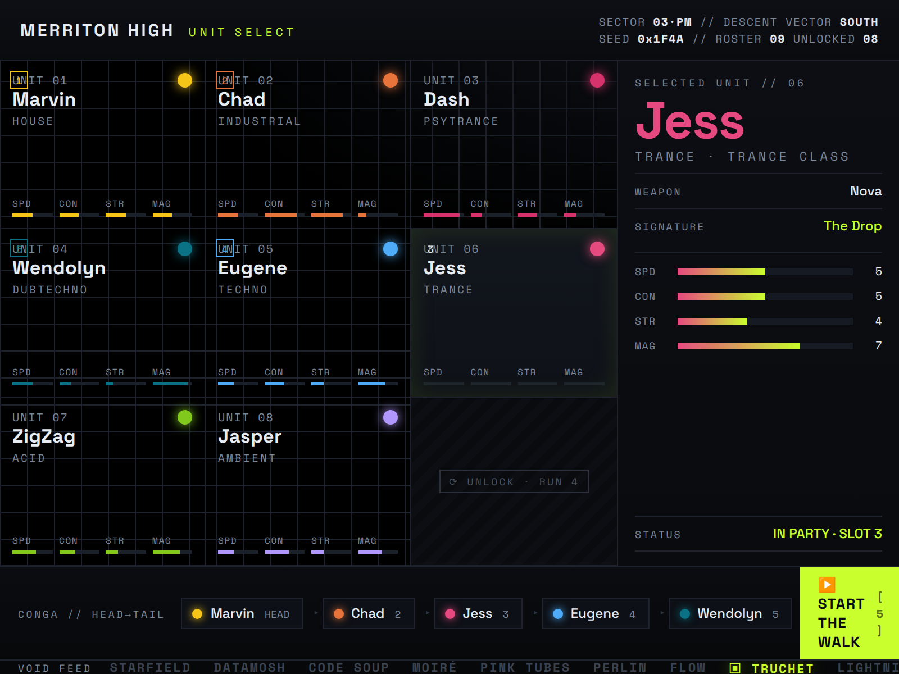
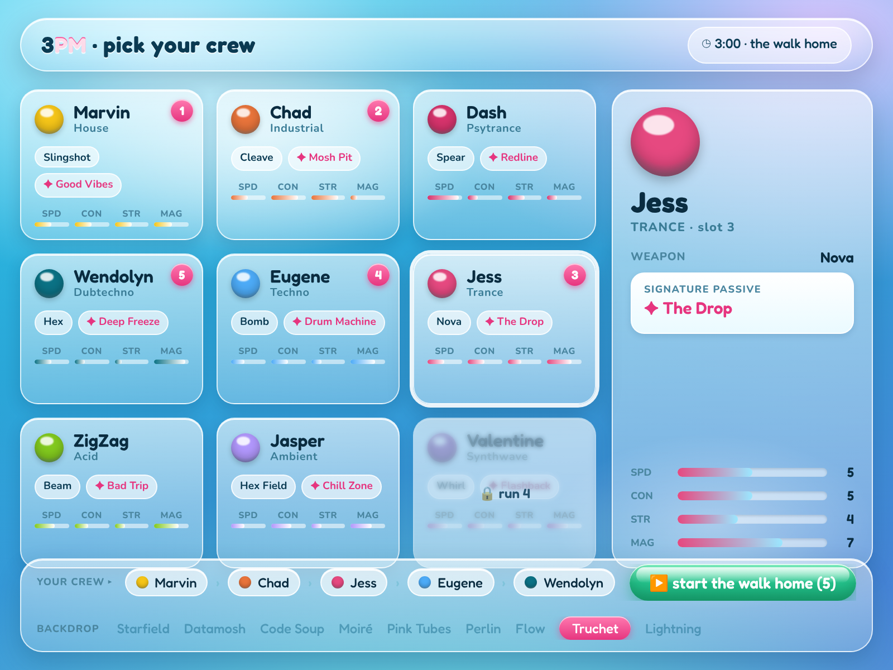
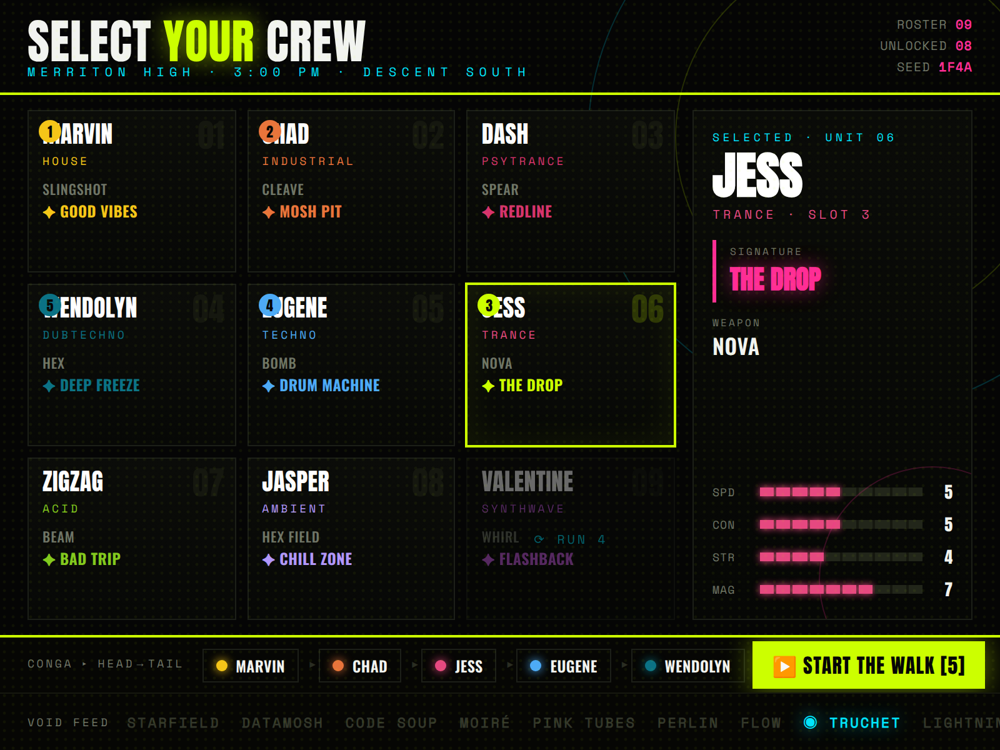
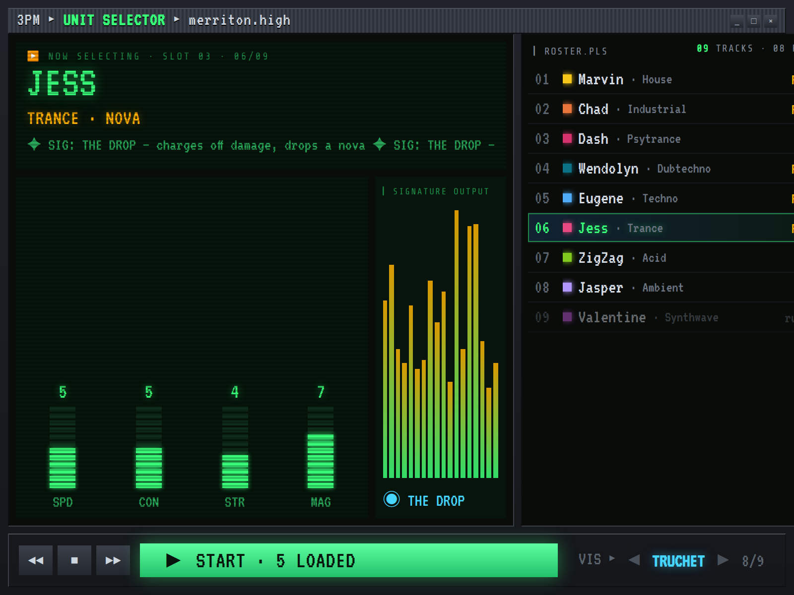

Same real roster & data, four visions of “2000s electronic-music raver, but clean.” Each embraces the era's neon/gradient/chrome as a deliberate signature (not AI-slop), held together by a strict grid, clear hierarchy, and negative space.




Stills rendered from live HTML/CSS (the game's own stack) → directly buildable. Grounded in the obsidian_vault design-critique skill (anti-slop: distinct display+mono pairing, brand-palette color, negative space, one detail at 120%). Open any source file in art-test/picker-redesign/ to see it live.